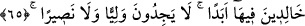
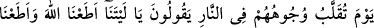
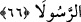

64. Şu muhakkak ki, Allah kâfirleri rahmetinden kovmuş ve onlara çılgın bir ateş
hazırlamıştır.
“Şu muhakkak ki, Allah” sadece haşrı inkâr eden ve peygambere inâd eden kâfirleri
değil, tüm “kâfirleri” dünyâda da âhirette de “rahmetinden kovmuş” uzaklaştırmıştır.
İşte bu yüzden onlar, her mahlûkun sonunda dönüp kendisine varacağı ve ona
hazırlanmak için ihtimam göstermesi gerekli olan bir hak (kıyâmet) ile alay ediyorlar.
“Ve” bununla beraber “onlara” âhirette katlanacakları “çılgın” pek şiddetli
tutuşturulmuş “bir ateş hazırlamıştır.”
65. (Onlar) orada ebedî olarak kalacaklar, (kendilerini koruyacak) ne bir dost ne
de bir yardımcı bulacaklardır.
O çılgın ateşte ebedî olarak kalmaları takdîr edilmiş olarak “(Onlar) orada ebedî”
dâimî “olarak kalacaklar,” yâni azap veren ateş içinde dâimâ kalacaklar. Onların
orada sürekli olarak kalmaları, bu hususta mübâlağa için ebedî ve devamlı oldukları
ifâde edilerek te’kid edilmiştir.
Kendilerini koruyacak “ne bir dost ne de” kendilerinden azâbı bertaraf edecek ve
azabdan kurtaracak “bir yardımcı bulacaklardır.”
66. Yüzleri ateşte evrilip çevrildiği gün: Eyvah bize! Keşke Allâh’a itâat
etseydik, Peygamber’e de itâat etseydik! derler.
“Yüzleri ateşte evrilip çevrildiği gün:” Yâni ateşte etin kızartıldığı gibi yüzlerinin
bir yönden diğerine döndürüldüğü, etin tencerede pişirilip kaynamanın onu bir yönden
diğerine ve bir hâlden başka bir hâle döndürdüğü gibi çevrildiği veya döndürülmüş ve
tersyüz edilmiş olarak ateşe atıldıkları gün demektir.
Özel olarak yüzlerin zikredilmesi, bedenin hepsini uzuvların en şerefli ve değerlisi
olan yüzlerle ifade etmek içindir. Yine onların yüzlerinin güzellikten çirkinliğe,
beyazdan siyaha çevrildiği de söylenmiştir.
Sanki “Peki onlar bu durumda ne yaparlar?” diye sorulmuş, kaybettiklerine hasret ve
nedâmet çekerek şöyle dedikleri söylenmiştir:
“Eyvah bize! Keşke” dünyâda bize emrettiği ve yasakladığı konularda “Allâh’a itâat
etseydik, Peygamber’e de” bizi dâvet ettiği hak konusunda “itâat etseydik!” de bu